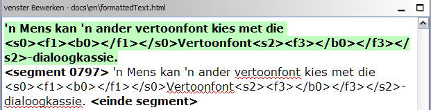

Deze gids Snel starten behandelt slechts de basisonderwerpen. Ideaal gesproken zouden alle gebruikers de gebruikershandleiding moeten lezen om zichzelf alles eigen te maken wat OmegaT te bieden heeft. De hier beschreven sneltoetsen gebruiken de regel met betrekking tot de "ctrl+toets" maar gebruikers van een Mac zouden daar "cmd+toets" moeten lezen. De "cmd"-toets heeft ofwel een label "command" of een Apple-merkteken op Apple-toetsenborden.
Het OmegaT-scherm bestaat uit één ruimte met drie afzonderlijke vensters. Van elk van deze vensters kunnen de afmetingen met de muis gewijzigd worden. Links staat het venster Bewerken waar u uw vertalingen in typt. Rechtsboven staat het venster Overeenkomsten, waar de overeenkomsten uit het vertaalgeheugen worden weergegeven. Daaronder staat het venster Woordenlijst, waar de overeenkomsten uit de woordenlijst worden weergegeven.
In het venster Bewerken presenteert OmegaT de brontekst 'gesegmenteerd' in zinnen (of alinea's). U vertaalt deze segmenten één voor één. Als u van segment naar segment gaat worden uw vertalingen opgenomen in een vertaalgeheugen. Als alle segmenten vertaald zijn (of eerder als u dat wilt) zal OmegaT het vertaalgeheugen gebruiken om de vertaalde documenten te maken in de map “Target”.
OmegaT beheert uw vertaalwerk in zogenaamde vertaalprojecten. Voor elk project zal OmegaT een verzameling mappen maken. Deze worden gebruikt om de brondocumenten die moeten worden vertaald, de woordenlijsten die u misschien wilt gebruiken en alle vertaalgeheugens die u misschien wilt gebruiken, op te slaan. OmegaT maakt ook een map “Target” die de voltooide vertaalde documenten zal bevatten.
Selecteer Project → Nieuw... uit het menu.
Navigeer naar de map waar u de projectbestanden wilt opslaan en typ een naam in voor het vertaalproject. Deze naam zal worden gebruikt voor de hoofdmap van het project; alle projectbestanden worden opgeslagen in deze map of de submappen daarvan.
OmegaT zal u vragen om de te maken projectmappen te bevestigen of te wijzigen, met behulp van onderstaand dialoogvenster:
U kunt eenvoudigweg de locatie van de submappen accepteren, maar overtuig u er van dat de codes voor de brontaal en taal voor de vertaling correct zijn. Selecteer de taalcode (2 letters) of taal-en-landcode (2 + 2 letters) uit de keuzelijst of typ ze met de hand in (de taalcode kan 2- of 3-cijferig zijn). Maak een mentale notitie van de locatie van de submap Target (voor uw vertaalde documenten). Als u wilt dat OmegaT segmenteert per zin in plaats van per "alinea", is het een goed idee om de segmentatieregels nog eens te controleren.
Als u op OK klikt om de instellingen van het project te accepteren, zal OmegaT u vragen om de brondocumenten te selecteren om die te importeren. U kunt individuele bestanden importeren of u kunt hele mappenstructuren importeren (met alle bestanden in alle submappen). Als u per ongeluk de verkeerde documenten heeft geïmporteerd of teveel documenten, kunt u ze eenvoudigweg verwijderen uit de map Source van uw OmegaT-project (bijvoorbeeld met behulp van bestandsbeheer van uw systeem).
Kijk in het venster Projectbestanden om uw lijst met bestanden te controleren die vertaald moeten worden (Menu: Project → Projectbestanden..., als het niet automatisch opent). Als u de inhoud van de map Source heeft moeten veranderen, vergeet dan niet om het project eerst opnieuw te laden (Menu: Project → Herladen). OmegaT opent standaard het eerste bestand van de projectlijst. Onthoud dat OmegaT alleen bestanden kan vertalen in de onderstaande formaten als zij overeenkomen met de patronen die zijn gedefinieerd in de bestandsfilters. Alle andere bestanden zullen worden genegeerd.
Als u eenmaal het project en de bestanden die u wilt vertalen heeft gedefinieerd, zal OmegaT het eerste bronbestand openen in het venster Bewerken. Het eerste segment wordt groen geaccentueerd; een kopie van de brontekst wordt eronder weergegeven in het “doelveld”. (Op dit punt is alle tekst buiten het doelveld beveiligd en kan niet worden gewijzigd.) U moet uw vertaling typen tussen de tags <segment 0001> en <einde segment>, waarbij u de brontekst overschrijft. Druk op de toets "ENTER" om door te gaan naar het volgende segment. Opmerking:
In het item Weergave van het hoofdmenu kunt u de instellingen van het venster Bewerken wijzigen (bijvoorbeeld om de brontekst wel of niet te tonen, de vertaalde tekst te accentueren etc).
Als u op "ENTER" drukt gebeuren er verschillende onzichtbare dingen: OmegaT voegt het segmentenpaar (het bronsegment en de vertaling daarvan) toe aan het vertaalgeheugen en vertaalt ook automatisch alle andere identieke segmenten die het in de andere projectbestanden ontdekt. Het kijkt ook in het vertaalgeheugen en woordenlijst naar overeenkomsten voor het volgende niet-vertaalde segment.`
Als OmegaT een fuzzy overeenkomst (30% of meer) voor het volgende segment in het vertaalgeheugen vindt, geeft het dit weer in het venster Overeenkomsten. In het venster Overeenkomsten wordt standaard de eerste overeenkomst geselecteerd.

U kunt de sneltoetsen van het toetsenbord gebruiken om de overeenkomsten uit het vertaalgeheugen vanuit het venster Overeenkomsten in uw doelveld in te voegen:
Ctrl+I om de geselecteerde overeenkomst op de cursorpositie in te voegen of...Ctrl+R om het gehele segment te overschrijven met de geselecteerde overeenkomst.Als er meerdere overeenkomsten zijn gevonden en u wilt niet de geselecteerde overeenkomst gebruiken:
Ctrl+2 voor de weergegeven tweede overeenkomst, Ctrl+3 voor de derde overeenkomst, etc.Ctrl+I of Ctrl+R zoals hierboven.(U kunt OmegaT vertellen dat elke eerste overeenkomst boven een bepaald percentage van overeenkomst automatisch in het doelveld moet worden ingevoegd als het segment opent. Stel deze optie in met behulp van Opties → Bewerken (gedrag)...)
Overeenkomende termen in woordenlijsten en woordenboeken, die u hebt opgenomen in het project, zullen als verwijzing worden weergegeven in de vensters Woordenlijst en Woordenboek.
OmegaT verschaft een groot scala aan zoekfuncties. Roep het venster Zoeken op met Ctrl+F en voer het woord of de frase waarnaar u wilt zoeken in het vak "Zoeken naar" in. Als alternatief: selecteer een woord of frase ergens in het bewerkingsveld en druk op Ctrl+F. Het woord of de frase wordt in dit geval automatisch ingevoegd in het vak "Zoeken naar".
In het venster Google Translate zult u automatisch een suggestie krijgen voor de vertaling van het huidige segment. Druk op Ctrl+M en het zal de huidige inhoud van het doelsegment vervangen.
Als u alle segmenten heeft vertaald (of eerder als u dat wilt), zal OmegaT de doeldocumenten bijwerken met behulp van de opgeslagen vertalingen in het vertaalgeheugen. Selecteer Project → Vertaalde documenten maken uit het menu om dat te doen. OmegaT zal vertaalde versies van alle vertaalbare documenten in de map Source van het project maken, ongeacht of zij wel of niet volledig vertaald zijn. De geheel of gedeeltelijk vertaalde bestanden zullen worden opgeslagen in de map Target van het project. Open de doelbestanden met hun gekoppelde toepassing (browser, tekstverwerkingsprogramma...) om de inhoud en opmaak van uw vertaling te controleren om uw vertaalwerk te voltooien. U kunt dan terugkeren naar OmegaT om de nodige correcties te maken; vergeet niet om de vertaalde documenten opnieuw te maken.
OmegaT zorgt er voor dat de opmaak van de brondocumenten (vet, cursief etc.) niet verloren gaat door het te markeren met speciale tags. OmegaT-tags zijn samengesteld uit één of meer letters, gevolgd door één of meer cijfer en met het "/"-teken om af te sluiten (bijvoorbeeld: <f0>, </f0> <br>, </s2> etc.). U moet deze tags met zorg behandelen en er voor zorgen dat zij op de juiste wijze zijn opgenomen in de doelsegmenten (zie Tag-bewerkingen).
In deze voorbeelden hebben we de tags geaccentueerd om ze gemakkelijker te laten zien, maar in OmegaT zullen ze niet geaccentueerd zijn. De HTML-tags, geaccentueerd in blauw, zullen door OmegaT worden genegeerd als zij het segment volledig omsluiten. De tags, hieronder geaccentueerd in groen moeten door OmegaT worden afgehandeld omdat zij binnen het segment staan. Hier is een voorbeeld van een segment in HTML:
<p>Een ander lettertype voor weergave kan worden geselecteerd via het dialoogvenster<b>Lettertype weergeven</b>. Open het via het menu-item <i>Instellingen</i> →<i>Lettertype weergeven...</i>. Het lettertype en de afmetingen kunnen worden gewijzigd in het dialoogvenster.</p>
Hier ziet u hoe OmegaT het zal weergeven, met de vertaling in Afrikaans:

Als OmegaT het vertaalde document heeft gemaakt, zal de HTML er zo uitzien:

OmegaT detecteert niet automatisch foutieve tags in het vertaalde document. Voordat u het document aflevert aan uw cliënt, moet u daarom eerst de tags controleren op fouten.
Selecteer Extra → Tags valideren uit het menu. Een tabel zal worden weergegeven waarin de segmenten worden getoond waarvan de bron- en doeltags niet overeenkomen. Klik op het segmentnummer. U wordt automatisch naar het verdachte segment gebracht in het venster Bewerken waar u de tags kunt corrigeren. Druk op Enter om het gecorrigeerde segment te valideren en controleer de correctie door opnieuw op Ctrl-T te drukken.
In sommige gevallen kunnen tagfouten er voor zorgen dat het document niet geopend kan worden. U moet u er dan ook van overtuigen dat u alle tagfouten heeft gecorrigeerd voordat u de vertaalde documenten maakt. Tenslotte moet u de uiteindelijke opmaak altijd controleren door het document te openen in de gekoppelde viewer of bewerkingsprogramma.
In sommige programmeertalen (bijv. PHP, C) worden speciale tags gebruikt als tijdelijke aanduidingen in tekenreeksen die in combinatie met de functie printf worden gebruikt. OmegaT kan deze tags detecteren en valideren als u dat inschakelt. Selecteer Opties→ Tagvalidatie... uit het menu. U kunt kiezen uit eenvoudige of volledige validatie. In eenvoudige validatie worden alleen eenvoudige varianten van de mogelijke waarden van de tijdelijke aanduidingen gebruikt: Dit is handig als de broncode niet de meer expressieve en complexe tijdelijke aanduidingen bevat en u een groot aantal valse positieven zou krijgen.